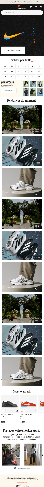
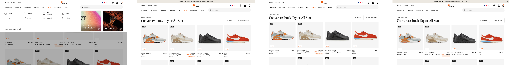

Production visuelle
TCB — Top Category Banner
Conception de bannières catégories sur la homepage. Formats web, mobile et tablette sous Photoshop, adaptés aux emplacements définis par l'équipe marketing.
UX Design · Webdesign · Production · 2023 à 2025
Repenser les pages dédiées aux services omnicanaux de Courir pour maximiser leur exposition, clarifier l'offre et offrir une expérience de navigation fluide sur desktop et mobile.

Les pages dédiées aux services omnicanaux de Courir souffraient de plusieurs lacunes : défilement excessif pour accéder aux informations, design peu attractif et navigation peu intuitive. Les utilisateurs ne comprenaient pas rapidement ce que la marque proposait au-delà de la vente en ligne.
L'objectif était double : maximiser l'exposition des services (E-réservation, Click & Collect, Commande en magasin…) et créer une interface visuellement engageante qui encourage l'exploration.
Une approche méthodique en plusieurs étapes, de l'analyse des besoins à la livraison des maquettes finales.
Étude des comportements utilisateurs en ligne, identification des points de friction actuels. Analyse des exigences fonctionnelles et esthétiques à partir du brief remis par l'équipe.
Analyse stratégique des sites concurrents pour identifier les tendances et les meilleures pratiques du secteur, afin de positionner les pages de manière différenciante.
Création de wireframes pour établir la structure de base, puis maquettes haute-fidélité sur Figma pour les versions web et mobile. Plusieurs itérations proposées par support.
Sessions de tests avec l'équipe pour recueillir des retours sur l'expérience utilisateur. Les maquettes ont été affinées en 2 à 3 versions par support jusqu'à validation finale.
Une architecture en deux niveaux : une page générale listant tous les services avec des CTAs simples et épurés (maximum deux lignes explicatives par service), et des pages dédiées pour chaque service avec leur propre design.


« Initialement, la demande était de rendre ces pages très utilitaires. J'ai voulu les rendre non seulement fonctionnelles, mais aussi esthétiquement plaisantes — en combinant interface intuitive et design attrayant. »
Sur mobile, j'ai introduit un menu déroulant pour obtenir un premier aperçu des services sans surcharger la page. En cliquant, l'utilisateur accède à une description détaillée — fonctionnalité et esthétisme réunis pour une navigation épurée.


Le projet a démontré une approche réfléchie et structurée, mettant l'accent sur l'optimisation de l'expérience utilisateur et la satisfaction des besoins des visiteurs.
Ce qui m'a le plus marqué : lors des réunions de validation avec mes supérieurs, c'est ma version qui a été retenue. Cette expérience a renforcé ma confiance dans ma capacité à répondre aux attentes tout en apportant ma propre vision créative.
« Ce projet a été incroyablement enrichissant. Initialement guidé, j'ai pu répondre aux attentes tout en apportant ma vision créative — et c'est ma version qui a été validée. »
En parallèle du projet omnicanal, mes missions quotidiennes en alternance couvraient la production visuelle et la gestion du back-office e-commerce.
Production visuelle
Conception de bannières catégories sur la homepage. Formats web, mobile et tablette sous Photoshop, adaptés aux emplacements définis par l'équipe marketing.
Production visuelle
Création d'encarts pour la page d'accueil : promotions, soldes, mises en avant de marques. Chaque visuel conçu pour capter l'attention et générer des clics vers les pages dédiées.
Production visuelle
Réalisation de pages dédiées à des marques partenaires (Nike, Ryan Koff…) — brief reçu de l'équipe, création sous Photoshop, intégration sur le site web et mobile.
Back-office
Formation et utilisation du back-office SFCC pour intégrer les visuels directement sur le site. Gestion des emplacements, publication des campagnes, vérification de l'affichage sur tous les supports.
Aperçu des pages et visuels réalisés et intégrés directement sur courir.com — homepage desktop, mobile, header, push trends et page listing.




